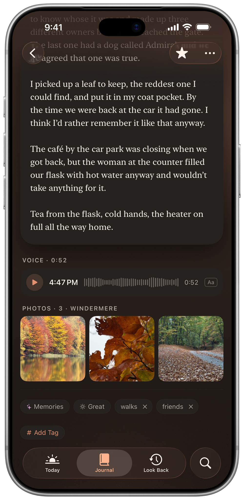
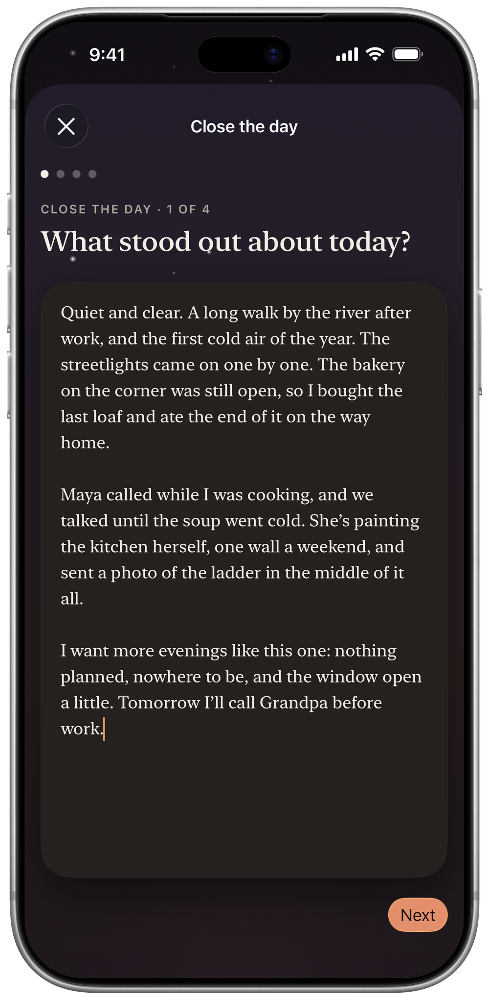
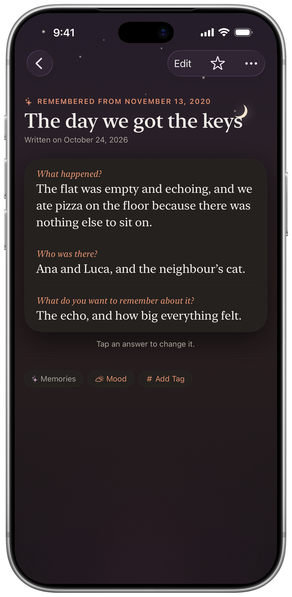
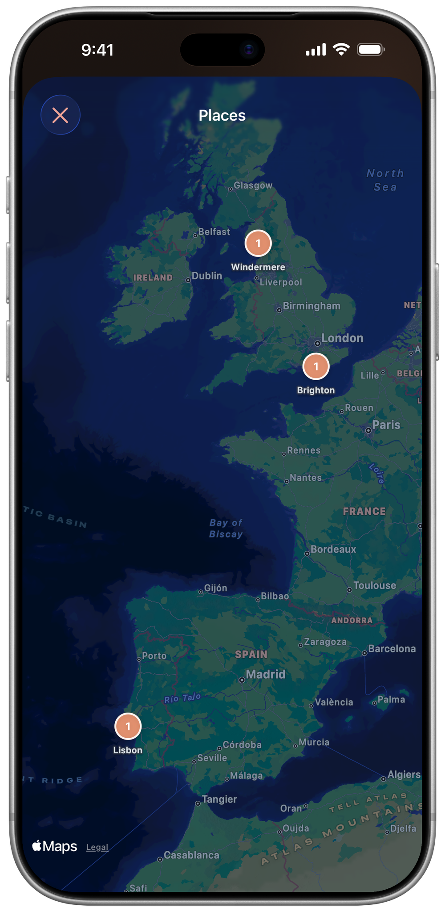
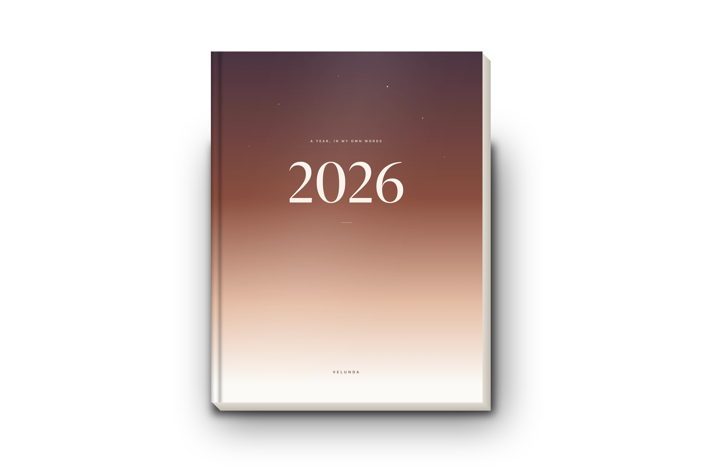
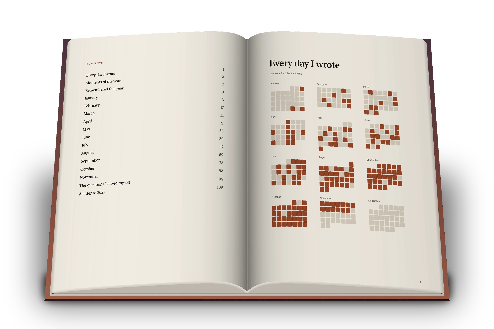
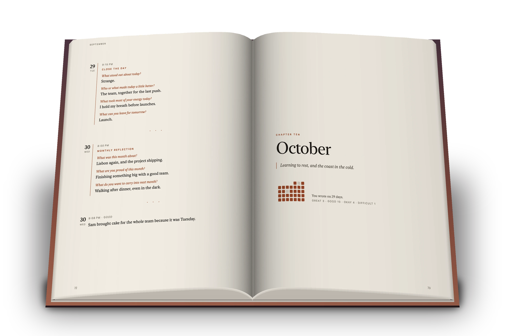
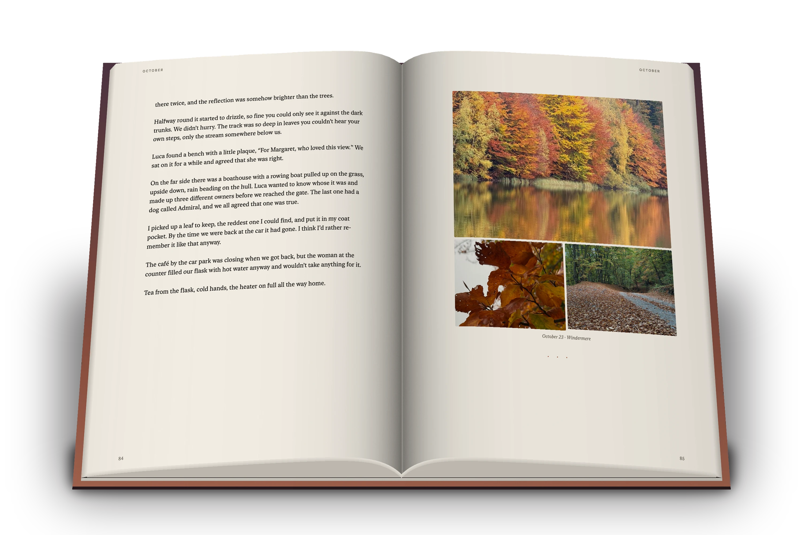
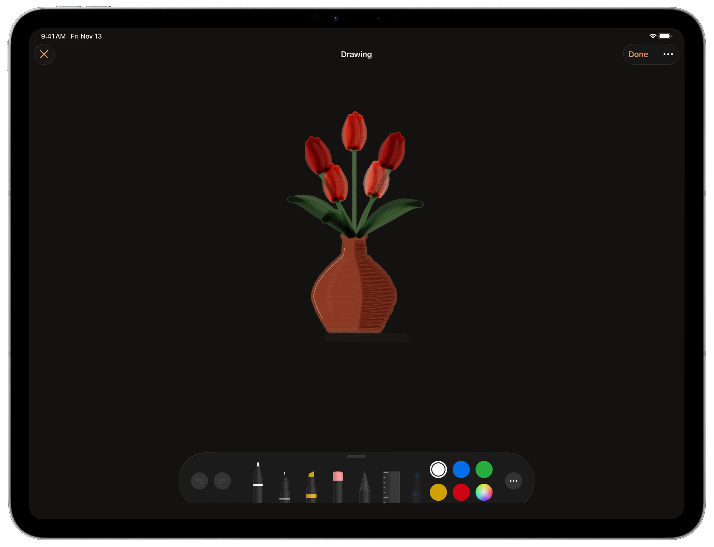
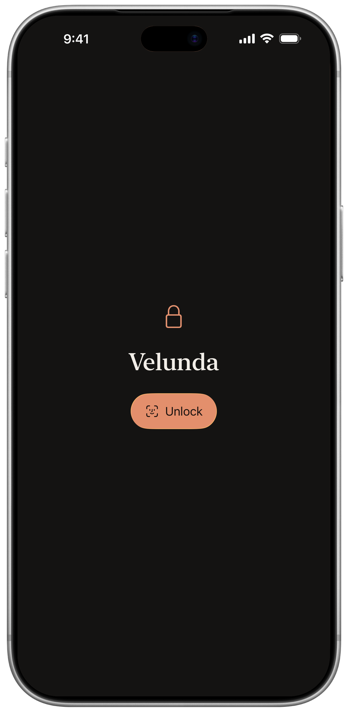

No accountNo adsNo trackingNo AINo subscriptionNo streaks
A day with Velunda
A few minutes a day, kept for years.
Each morning there’s a question to start from, and another if it doesn’t fit. Templates help with mornings, evenings, hard days and big decisions, so there’s always somewhere to begin.
Any timeWords, photos, voice
Write it, show it, or just say it.
Add up to ten photos to a page, and Velunda notes the town each one was taken in. No time to type? Press record, and Velunda can write out what you said, right on your device.

Evening9:15 PM
Let the day go.
Four short questions before bed, and you can skip any of them. Write a word or a page: either way, the day is kept.

Years laterOn the same day
The past comes back on its own.
Write down a memory with the day it really happened: your first flat, a summer long ago. Each year on that date, Velunda brings it back.

Look BackEvery trip, every town
Every trip, on one map.
Places gathers your pages town by town. Tap a pin and you’re back on that beach, that street, that lake.

At the end of the year
Your year, as a real book.
Velunda sets everything you wrote, photographed and drew into a book you can print, bind and keep on a shelf. Scroll to leaf through one.
The cover
Your title, your name.
A cover in the colours of morning or dusk, with the title you give your year. Add a dedication if you like.

The first pages
Every day you wrote, at a glance.
The book opens with its contents and a calendar of the whole year: one square for every day you wrote.

Inside
A chapter for every month.
Each opens with a line of your own and how the month felt, then every day you wrote and every evening you closed.

Your photos
The pictures, where they belong.
Photos sit beside the words they go with, with the day and the town beneath. Made on your device, never uploaded.

iPad and Apple Pencil
Room to write. Space to draw.
On iPad, the page has room to breathe. And on days when words won’t come, pick up Apple Pencil: the drawing stays with the page and ends up in your book.

Private by design
Your thoughts are nobody’s business.
Velunda has no account and no servers of its own. It collects nothing, and everything you write is encrypted end to end.

Locked with Face ID
Or Touch ID, or your passcode. Widgets and reminders never show what you’ve written.
Encrypted, on every device
Your journal syncs through your own iCloud, so iPhone and iPad stay in step. Every word, photo and recording is encrypted.
Your voice stays with you
Recordings are written out on your device. The audio is never sent to anyone.
Always yours to keep
Export a full backup, Markdown or a PDF whenever you like, photos and recordings included.
Price
Try everything free. Then pay once.
Your first week
Free, with everything.
Seven days with every feature, from the first page. Nothing to sign up for.
After that
Yours for good.
One purchase, no subscription. With Family Sharing, your family gets it too. And whatever you decide, every page you wrote stays yours to read, search and export.
Can anyone else read my journal?
No. Velunda has no account and no server of its own. Your journal stays on your devices and in your private iCloud account, where everything you write is end-to-end encrypted.
What happens after the free week?
Writing and editing need the one-time purchase. Everything you’ve already written stays readable, searchable and exportable, whether you buy it or not.
Does it sync between iPhone and iPad?
Yes, through iCloud, when both devices are signed in to the same Apple Account.
Are my photos and recordings uploaded anywhere?
Only to your own iCloud, encrypted, if you use it. Recordings are written out on your device, and the audio never leaves it otherwise. To name the town a photo was taken in, Velunda asks Apple Maps about its location and keeps only the town; you can turn that off in Settings.
Can I take my journal with me?
Yes. Export a backup you can import again, Markdown files with your photos and recordings, a PDF, or all three in one archive.
Which languages does it speak?
English, Italian, Spanish, French and German.